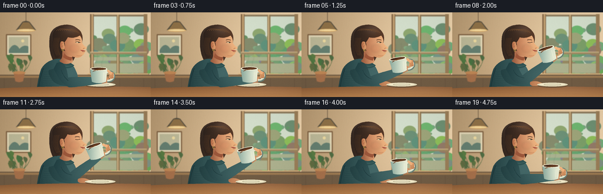
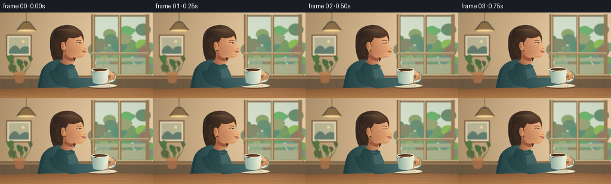

CODING AGENTS AS PIXEL WORLD MODELS
traex/GPT-6.1-Sol · motion_rationality_0003
点击播放 · 原生 RGB 像素
逐轮保存的候选
回放视频、检查图与代码变化。
每份候选均可单独播放。实际图片检查记录在下方工具轨迹中。
候选 01播放与检查图
点击播放 · 原生 RGB 像素


展开代码变化
--- 上一保存版本
+++ 本次保存版本
@@ -0,0 +1,255 @@
+from pathlib import Path
+import math, re, json
+import numpy as np
+from PIL import Image, ImageDraw, ImageFilter
+import artifact_io
+
+ROOT=Path(__file__).resolve().parent
+SPEC=json.loads((ROOT/'task_spec.json').read_text())
+W,H=SPEC['width'],SPEC['height']; S=4
+SZ=(W*S,H*S)
+rng=np.random.default_rng(27)
+
+# Antialiased, shaded, hand-drawn shapes. All geometry is authored locally.
+def path_points(s):
+ t=re.findall(r'[MLCQZmlcqz]|-?\d+(?:\.\d+)?',s); i=0; pts=[]; cur=(0,0); start=cur
+ while i<len(t):
+ cmd=t[i]; i+=1
+ if cmd=='Z': pts.append(start);cur=start;continue
+ n={'M':2,'L':2,'Q':4,'C':6}[cmd]
+ v=list(map(float,t[i:i+n]));i+=n
+ if cmd in ('M','L'):
+ cur=tuple(v);pts.append(cur)
+ if cmd=='M':start=cur
+ else:
+ p0=np.array(cur); end=np.array(v[-2:]); p1=np.array(v[:2]); p2=np.array(v[2:4])
+ for u in np.linspace(0,1,21)[1:]:
+ p=(1-u)**2*p0+2*u*(1-u)*p1+u*u*end if cmd=='Q' else (1-u)**3*p0+3*(1-u)**2*u*p1+3*(1-u)*u*u*p2+u**3*end
+ pts.append(tuple(p))
+ cur=tuple(end)
+ return pts
+
+def poly(im,pts,fill,outline=None,width=.5):
+ d=ImageDraw.Draw(im);q=[(round(x*S),round(y*S)) for x,y in pts]
+ d.polygon(q,fill=fill)
+ if outline: d.line(q+[q[0]],fill=outline,width=max(1,round(width*S)),joint='curve')
+
+def path(im,s,fill,outline=None,width=.5,transform=None):
+ pts=path_points(s)
+ if transform:pts=[transform(*p) for p in pts]
+ poly(im,pts,fill,outline,width)
+
+def line(im,pts,fill,width=1):
+ ImageDraw.Draw(im).line([(int(x*S),int(y*S)) for x,y in pts],fill=fill,width=max(1,round(width*S)),joint='curve')
+
+def curve(im,s,fill,width=1,transform=None):
+ pts=path_points(s)
+ if transform:pts=[transform(*p) for p in pts]
+ line(im,pts,fill,width)
+
+def ellipse(im,box,fill,outline=None,width=1):
+ ImageDraw.Draw(im).ellipse(tuple(round(z*S) for z in box),fill=fill,outline=outline,width=max(1,round(width*S)))
+
+def rect(im,box,fill,radius=0):
+ ImageDraw.Draw(im).rounded_rectangle(tuple(round(z*S) for z in box),round(radius*S),fill=fill)
+
+YY,XX=np.mgrid[:H*S,:W*S].astype(float); XX/=S;YY/=S
+
+def shaded(im,s,c0,c1,axis='x',bounds=None,light=None,transform=None):
+ pts=path_points(s)
+ if transform: pts=[transform(*p) for p in pts]
+ mask=Image.new('L',SZ); poly(mask,pts,255)
+ b=bounds or ((min(p[0] for p in pts),max(p[0] for p in pts)) if axis=='x' else (min(p[1] for p in pts),max(p[1] for p in pts)))
+ f=np.clip(((XX if axis=='x' else YY)-b[0])/(b[1]-b[0]),0,1)
+ a=np.array(c0)[None,None,:]*(1-f[:,:,None])+np.array(c1)[None,None,:]*f[:,:,None]
+ if light:
+ x,y,rx,ry,strength=light
+ g=np.exp(-((XX-x)/rx)**2-((YY-y)/ry)**2)*strength
+ a+=g[:,:,None]
+ im.paste(Image.fromarray(np.uint8(np.clip(a,0,255))), (0,0), mask)
+ return pts
+
+# Static interior: soft depth-of-field, afternoon window light, quiet warm cafe.
+def background():
+ f=XX/W
+ a=np.zeros((H*S,W*S,3))+np.array([186,156,116])
+ a+=f[:,:,None]*np.array([45,48,49])
+ a+=np.exp(-((XX-190)/105)**2-((YY-50)/100)**2)[:,:,None]*12
+ im=Image.fromarray(np.uint8(np.clip(a,0,255)))
+ rect(im,(154,4,250,106),(142,124,94),2)
+ rect(im,(158,7,247,102),(213,224,205),1)
+ # Outdoor foliage and sunlit courtyard, abstract and defocused.
+ for j in range(70):
+ x=rng.uniform(158,250);y=rng.uniform(28,105);r=rng.uniform(2,14)
+ color=tuple(int(v) for v in (np.array([125,153,117])+rng.normal(0,15,3)))
+ ellipse(im,(x-r,y-r*.8,x+r,y+r*.8),color)
+ rect(im,(157,76,248,82),(170,178,143))
+ rect(im,(157,87,248,103),(174,178,143))
+ # Light-catching wooden window frame.
+ rect(im,(153,3,159,109),(122,94,64));rect(im,(155,3,158,109),(193,160,114))
+ rect(im,(198,4,203,106),(141,115,78));rect(im,(199,4,201,106),(202,176,132))
+ rect(im,(244,3,250,107),(156,128,90))
+ rect(im,(153,67,249,71),(160,139,99));rect(im,(153,67,249,68),(213,188,144))
+ rect(im,(149,104,253,109),(158,120,79),1)
+ rect(im,(148,104,252,105.5),(221,186,134),.5)
+ # Picture on the wall.
+ rect(im,(10,37,53,74),(130,100,69),1)
+ rect(im,(12,39,51,72),(227,216,183),.4)
+ rect(im,(15,42,48,69),(190,186,153))
+ path(im,'M 15 64 Q 24 48 33 62 Q 40 54 48 58 L 48 69 L 15 69 Z',(102,128,113))
+ ellipse(im,(36,46,41,51),(237,218,160))
+ # Suspended lamp.
+ line(im,[(44,0),(44,17)],(87,71,55),.75)
+ path(im,'M 38 16 Q 44 13 50 16 L 61 30 Q 44 34 27 30 Z',(91,82,65))
+ path(im,'M 39 17 L 31 29 Q 45 30 58 29 L 49 17 Z',(144,114,72))
+ ellipse(im,(28,28,60,33),(217,174,111))
+ ellipse(im,(30,29,58,31.5),(250,223,161))
+ # Cafe back bench.
+ rect(im,(0,106,256,137),(114,93,69))
+ rect(im,(0,108,256,111),(160,125,84))
+ for x in (7,52,98,147,203,244):line(im,[(x,112),(x,135)],(103,82,62),.7)
+ # Plant on the back left, with an ochre ceramic pot.
+ for j in range(15):
+ x=32+rng.uniform(-21,20);y=rng.uniform(73,98)
+ curve(im,f'M 33 109 Q {x+5:.2f} {y+10:.2f} {x:.2f} {y:.2f}',(82,105,65),.75)
+ path(im,f'M {x:.2f} {y+6:.2f} Q {x-8:.2f} {y-8:.2f} {x+2:.2f} {y-3:.2f} Q {x+6:.2f} {y+1:.2f} {x:.2f} {y+6:.2f} Z',(74+j%4*8,104+j%5*5,67))
+ path(im,'M 23 102 L 42 102 L 39 117 Q 32 120 26 117 Z',(168,114,76))
+ ellipse(im,(22,100,43,105),(193,136,86))
+ return im.filter(ImageFilter.GaussianBlur(.58*S))
+BG=background()
+texture=rng.normal(0,.56,(H,W,1))
+
+def ease(u):
+ u=np.clip(u,0,1);return u*u*(3-2*u)
+
+def frame(k):
+ t=k/SPEC['fps']
+ if t<.65:q=0
+ elif t<1.85:q=ease((t-.65)/1.2)
+ elif t<3.15:q=1
+ elif t<4.45:q=1-ease((t-3.15)/1.3)
+ else:q=0
+ sip=math.sin(np.clip((t-1.85)/1.3,0,1)*math.pi)*.8 if 1.85<=t<=3.15 else 0
+ im=BG.copy()
+ # Back hair and silhouetted curls.
+ shaded(im,'M 91 83 Q 82 67 84 46 Q 84 29 100 23 Q 122 16 135 31 Q 144 40 137 58 L 123 84 Q 110 94 91 83 Z',(51,39,32),(87,56,39),light=(102,32,19,10,13))
+ # Torso and knit collar.
+ shaded(im,'M 91 80 Q 101 77 113 82 Q 124 85 131 105 L 137 135 L 61 139 Q 65 109 70 96 Q 77 84 91 80 Z',(36,65,67),(64,101,100),light=(115,102,20,35,11))
+ curve(im,'M 74 95 Q 66 115 65 138',(28,54,57),1.3)
+ # Neck, partly in shadow.
+ shaded(im,'M 105 65 L 124 66 Q 121 77 124 83 L 117 91 Q 108 92 99 83 Q 108 80 105 65 Z',(147,85,59),(213,148,103),light=(119,78,10,14,8))
+ path(im,'M 109 69 Q 114 77 123 76 L 121 82 Q 113 81 107 76 Z',(155,87,59))
+ path(im,'M 99 81 Q 108 91 120 86 L 126 90 Q 119 97 107 94 Q 100 92 95 86 Z',(47,82,82))
+ curve(im,'M 98 85 Q 109 95 123 90',(80,113,107),.75)
+ # Face; very small natural head inclination on contact.
+ def head(x,y):
+ ang=-.021*q
+ x0,y0=117,74
+ return (x0+(x-x0)*math.cos(ang)-(y-y0)*math.sin(ang),y0+(x-x0)*math.sin(ang)+(y-y0)*math.cos(ang)+q*.25)
+ face='M 112 31 Q 126 30 136 40 Q 140 46 139 51 Q 141 56 146 59 Q 149 61 145 62 L 142 63 Q 142 64 145 65 Q 147 66 144 67 Q 144 70 139 74 Q 134 79 123 75 Q 112 71 108 60 Q 99 51 106 39 Z'
+ shaded(im,face,(178,108,74),(237,181,127),light=(130,48,18,22,12),transform=head)
+ curve(im,'M 144 61 Q 141 61 141 62',(157,88,60),.45,head)
+ path(im,'M 136 64 Q 140 64 145 65 Q 142 66 139 66 Z',(169,83,66),transform=head)
+ curve(im,'M 140 67 Q 143 67 144 66.5',(111,58,49),.48,head)
+ curve(im,'M 130 73 Q 135 75 139 73',(189,119,81),.55,head)
+ # Side cheek soft shadow and light.
+ cheek=Image.new('RGBA',SZ,(0,0,0,0))
+ ellipse(cheek,(118,55,135,68),(190,100,70,36))
+ cheek=cheek.filter(ImageFilter.GaussianBlur(2*S));im=Image.alpha_composite(im.convert('RGBA'),cheek).convert('RGB')
+ # Eyebrow and eye, a subtle blink followed by calm closed eyes while sipping.
+ curve(im,'M 128 47 Q 132 45.5 136 47.4',(83,54,40),1.1,head)
+ closed=(q>.92) or k in (2,18)
+ if closed:
+ curve(im,'M 128.5 51 Q 132 52.6 135.8 50.7',(64,46,35),.75,head)
+ else:
+ path(im,'M 128 50.8 Q 132 49.2 136 51.2 Q 132 53 128 50.8 Z',(230,203,159),transform=head)
+ x,y=head(133.7,51.1);ellipse(im,(x-1,y-1,x+1,y+1),(64,64,47))
+ curve(im,'M 128 50.8 Q 132 49.2 136 51.2',(69,47,33),.65,head)
+ curve(im,'M 134.5 51.1 L 137 51',(66,45,33),.5,head)
+ # Hair swept away from face.
+ shaded(im,'M 90 44 Q 87 31 100 25 Q 119 17 132 28 Q 140 33 139 43 Q 137 42 136 39 Q 126 45 115 42 Q 112 48 109 51 Q 112 57 106 67 Q 101 77 95 79 Q 88 66 90 44 Z',(46,35,29),(87,57,39),light=(121,29,13,8,19),transform=head)
+ for n in range(8):
+ x=96+n*3.3
+ curve(im,f'M {x:.2f} 31 Q {x+5:.2f} 25 {min(x+17,134):.2f} {30+n*.75:.2f}',(111+n%3*5,74+n%3*4,47),.48,head)
+ for n in range(5):
+ curve(im,f'M {93+n*2} 43 Q {87+n*2} 59 {96+n*1.6} 73',(82+n*3,54+n*2,36),.5,head)
+ # Ear in front of hair, with a small gold hoop.
+ shaded(im,'M 108 50 Q 102 47 102 55 Q 102 63 107 64 Q 111 61 109 54 Z',(180,108,72),(224,160,111),transform=head)
+ curve(im,'M 106 53 Q 102 53 105 59 L 107 56',(159,89,60),.6,head)
+ x,y=head(106.5,63)
+ ellipse(im,(x-1.5,y-1,x+1.5,y+3.3),(207,162,81))
+ ellipse(im,(x-.7,y-.3,x+.7,y+2.5),(98,71,41))
+ # Knit weave, kept quiet so the face and cup stay focal.
+ for y in np.arange(99,136,3.1):
+ curve(im,f'M 73 {y} Q 85 {y-1.8} 100 {y+1.8}',(59,90,89),.35)
+ # Far arm resting on the tabletop.
+ shaded(im,'M 83 98 Q 80 105 91 118 Q 103 128 135 125 L 139 117 Q 119 118 103 109 L 97 94 Z',(36,65,67),(60,97,96))
+ shaded(im,'M 132 118 Q 140 116 147 118 L 157 122 Q 158 125 153 125 L 139 125 Q 133 125 132 122 Z',(184,119,80),(227,165,115))
+ for j in range(3):curve(im,f'M {143+j*3} 121 Q {150+j*2} 122 {151+j*2} 124',(171,105,73),.5)
+ # Foreground wood tabletop.
+ shaded(im,'M 0 129 Q 98 124 256 127 L 256 144 L 0 144 Z',(139,91,55),(184,129,77),axis='y',bounds=(126,144),light=(184,131,80,14,14))
+ for j in range(7):
+ y=130+j*2.5
+ curve(im,f'M 0 {y:.2f} Q 84 {y-2:.2f} 152 {y-.3:.2f} Q 218 {y+1:.2f} 256 {y-1:.2f}',(150+j%3*6,101+j%3*4,60+j%2*5),.32)
+ # Saucer remains on table while cup is lifted.
+ ellipse(im,(145,121,196,128),(109,80,53))
+ ellipse(im,(144,119.6,196,126.1),(224,216,184))
+ ellipse(im,(148,120.1,192,124.3),(248,239,207))
+ ellipse(im,(155,121,185,124),(190,182,150))
+ ellipse(im,(157,121.4,183,123.5),(229,222,191))
+ # Cup transform, pinned to the lip at the top-left rim at peak sip.
+ cx=153+(144.7-153)*q;cy=96+(65.55-96)*q
+ angle=(-.29-.018*sip)*q
+ def cup(x,y):return (cx+x*math.cos(angle)-y*math.sin(angle),cy+x*math.sin(angle)+y*math.cos(angle))
+ hx,hy=cup(33,12)
+ # Continuous two-link arm: stationary shoulder, bent elbow, hand follows handle.
+ elbow=np.array([116+8*q,119-5*q]); wrist=np.array([hx-3,hy+7])
+ sh=np.array([104,92]);v=wrist-elbow; v/=np.linalg.norm(v);normal=np.array([-v[1],v[0]])
+ cuff=wrist-v*10
+ def ff(p):return f'{p[0]:.3f} {p[1]:.3f}'
+ a=elbow+normal*8;b=cuff+normal*5.3;c=cuff-normal*5.3;e=elbow-normal*8
+ sleeve=f'M 96 86 Q 106 82 111 92 Q 114 99 {ff(e)} Q {ff(elbow-normal*10+v*5)} {ff(c)} L {ff(b)} Q {ff(elbow+normal*10+v*3)} {ff(a)} Q 109 124 101 114 L 91 96 Z'
+ shaded(im,sleeve,(32,62,65),(71,109,107),light=(130,109,36,20,8))
+ curve(im,f'M 104 98 Q 107 109 {ff(elbow-normal*3)}',(30,58,61),.65)
+ line(im,[tuple(c),tuple(b)],(103,136,125),1.6)
+ line(im,[tuple(c-v*2.0),tuple(b-v*2.0)],(43,78,79),.5)
+ # Bare wrist and palm behind the ceramic handle.
+ palm=f'M {ff(c)} L {ff(wrist-normal*4.5)} Q {hx+7:.3f} {hy+10:.3f} {hx+7:.3f} {hy+1:.3f} Q {hx+5:.3f} {hy-5:.3f} {hx:.3f} {hy-3:.3f} L {ff(wrist+normal*4.5)} L {ff(b)} Z'
+ shaded(im,palm,(181,109,72),(233,173,119),light=(hx+2,hy+1,8,8,6))
+ # Handle is a thick ceramic C, visibly open in its center.
+ curve(im,'M 27 6 C 44 0 45 23 29 21',(105,128,118),4.6,cup)
+ curve(im,'M 28 6 C 43 2 43 21 29 20',(227,229,204),3.1,cup)
+ # Cup with curved bottom and coffee surface.
+ shaded(im,'M 0 0 L 29 0 L 27 22 Q 15 27 3 22 Z',(137,168,156),(232,233,209),light=(cx+21,cy+12,14,25,12),transform=cup)
+ curve(im,'M 3 22 Q 15 27 27 22',(99,132,124),.6,cup)
+ path(im,'M 0 0 C 0 -4 29 -4 29 0 C 29 4 0 4 0 0 Z',(241,235,207),transform=cup)
+ path(im,'M 2 0 C 2 -2.7 27 -2.7 27 0 C 27 2.7 2 2.7 2 0 Z',(72,44,29),transform=cup)
+ path(im,'M 4 -.5 C 10 -2 23 -2 26 0 C 22 1.5 12 1.8 4 -.5 Z',(105,63,35),transform=cup)
+ curve(im,'M 1 1.1 Q 14.5 5 28 1.1',(250,245,221),.75,cup)
+ curve(im,'M 23 6 L 22 20',(248,245,221),.6,cup)
+ # Fingers curl naturally around the handle, staying locked to the cup.
+ for j in range(3):
+ path(im,f'M 35 {6+j*3.2:.2f} Q 40 {5+j*3.2:.2f} 40 {8+j*3.2:.2f} Q 40 {10+j*3.2:.2f} 36 {10+j*3.2:.2f} L 33.8 {9+j*3.2:.2f} Q 33 {7+j*3.2:.2f} 35 {6+j*3.2:.2f} Z',(218-j*6,151-j*4,101-j*3),transform=cup)
+ curve(im,f'M 35 {9.4+j*3.2:.2f} Q 38 {10.4+j*3.2:.2f} 39 {8.7+j*3.2:.2f}',(165,96,63),.4,cup)
+ path(im,'M 29 4 Q 29 1 32 2 L 37 6 Q 38 9 35 10 Q 32 9 29 4 Z',(239,177,124),transform=cup)
+ curve(im,'M 30.2 3 Q 31.3 2.5 32.7 4.5',(251,201,148),.6,cup)
+ # Barely visible aromatic steam, behind no major silhouette.
+ steam=Image.new('RGBA',SZ,(0,0,0,0))
+ if q<.84:
+ for j in range(2):
+ x,y=cup(11+j*9,-4)
+ amp=2*math.sin(t*1.5+j)
+ curve(steam,f'M {x:.2f} {y:.2f} Q {x-3+amp:.2f} {y-6:.2f} {x+amp:.2f} {y-11:.2f} Q {x+3:.2f} {y-16:.2f} {x+1:.2f} {y-21:.2f}',(250,239,215,50),.65)
+ steam=steam.filter(ImageFilter.GaussianBlur(.6*S))
+ im=Image.alpha_composite(im.convert('RGBA'),steam).convert('RGB')
+ # Film-like soft texture and gentle corner falloff, consistent between frames.
+ out=np.array(im.resize((W,H),Image.Resampling.LANCZOS),dtype=float)
+ y,x=np.mgrid[:H,:W]
+ vign=1-.095*((x-139)/179)**2-.055*((y-70)/104)**2
+ out=out*vign[:,:,None]+texture
+ return np.uint8(np.clip(out,0,255))
+
+if __name__=='__main__':
+ frames=np.stack([frame(k) for k in range(SPEC['frames'])])
+ artifact_io.save(frames, ROOT)
+ print('Saved', frames.shape, frames.dtype)
可观测工具轨迹
实际执行的命令与返回图片。
命令 1exit 0
/bin/bash -lc "ls -la && cat prompt.txt && printf '\\n---RULES---\\n' && cat GENERATION_RULES.md && printf '\\n---SPEC---\\n' && cat task_spec.json"
命令 2exit 0
/bin/bash -lc "cat artifact_io.py && python - <<'PY'
import PIL, numpy
print('PIL', PIL.__version__)
PY"命令 3exit 0
/bin/bash -lc "cat > generate.py <<'PY'
from pathlib import Path
import math, re, json
import numpy as np
from PIL import Image, ImageDraw, ImageFilter
import artifact_io
ROOT=Path(__file__).resolve().parent
SPEC=json.loads((ROOT/'task_spec.json').read_text())
W,H=SPEC['width'],SPEC['height']; S=4
SZ=(W*S,H*S)
rng=np.random.default_rng(27)
# Antialiased, shaded, hand-drawn shapes. All geometry is authored locally.
def path_points(s):
t=re.findall(r'[MLCQZmlcqz]|-?\\d+(?:\\.\\d+)?',s); i=0; pts=[]; cur=(0,0); start=cur
while i<len(t):
cmd=t[i]; i+=1
if cmd=='Z': pts.append(start);cur=start;continue
n={'M':2,'L':2,'Q':4,'C':6}[cmd]
v=list(map(float,t[i:i+n]));i+=n
if cmd in ('M','L'):
cur=tuple(v);pts.append(cur)
if cmd=='M':start=cur
else:
p0=np.array(cur); end=np.array(v[-2:]); p1=np.array(v[:2]); p2=np.array(v[2:4])
for u in np.linspace(0,1,21)[1:]:
p=(1-u)**2*p0+2*u*(1-u)*p1+u*u*end if cmd=='Q' else (1-u)**3*p0+3*(1-u)**2*u*p1+3*(1-u)*u*u*p2+u**3*end
pts.append(tuple(p))
cur=tuple(end)
return pts
def poly(im,pts,fill,outline=None,width=.5):
d=ImageDraw.Draw(im);q=[(round(x*S),round(y*S)) for x,y in pts]
d.polygon(q,fill=fill)
if outline: d.line(q+[q[0]],fill=outline,width=max(1,round(width*S)),joint='curve')
def path(im,s,fill,outline=None,width=.5,transform=None):
pts=path_points(s)
if transform:pts=[transform(*p) for p in pts]
poly(im,pts,fill,outline,width)
def line(im,pts,fill,width=1):
ImageDraw.Draw(im).line([(int(x*S),int(y*S)) for x,y in pts],fill=fill,width=max(1,round(width*S)),joint='curve')
def curve(im,s,fill,width=1,transform=None):
pts=path_points(s)
if transform:pts=[transform(*p) for p in pts]
line(im,pts,fill,width)
def ellipse(im,box,fill,outline=None,width=1):
ImageDraw.Draw(im).ellipse(tuple(round(z*S) for z in box),fill=fill,outline=outline,width=max(1,round(width*S)))
def rect(im,box,fill,radius=0):
ImageDraw.Draw(im).rounded_rectangle(tuple(round(z*S) for z in box),round(radius*S),fill=fill)
YY,XX=np.mgrid[:H*S,:W*S].astype(float); XX/=S;YY/=S
def shaded(im,s,c0,c1,axis='x',bounds=None,light=None,transform=None):
pts=path_points(s)
if transform: pts=[transform(*p) for p in pts]
mask=Image.new('L',SZ); poly(mask,pts,255)
b=bounds or ((min(p[0] for p in pts),max(p[0] for p in pts)) if axis=='x' else (min(p[1] for p in pts),max(p[1] for p in pts)))
f=np.clip(((XX if axis=='x' else YY)-b[0])/(b[1]-b[0]),0,1)
a=np.array(c0)[None,None,:]*(1-f[:,:,None])+np.array(c1)[None,None,:]*f[:,:,None]
if light:
x,y,rx,ry,strength=light
g=np.exp(-((XX-x)/rx)**2-((YY-y)/ry)**2)*strength
a+=g[:,:,None]
im.paste(Image.fromarray(np.uint8(np.clip(a,0,255))), (0,0), mask)
return pts
# Static interior: soft depth-of-field, afternoon window light, quiet warm cafe.
def background():
f=XX/W
a=np.zeros((H*S,W*S,3))+np.array([186,156,116])
a+=f[:,:,None]*np.array([45,48,49])
a+=np.exp(-((XX-190)/105)**2-((YY-50)/100)**2)[:,:,None]*12
im=Image.fromarray(np.uint8(np.clip(a,0,255)))
rect(im,(154,4,250,106),(142,124,94),2)
rect(im,(158,7,247,102),(213,224,205),1)
# Outdoor foliage and sunlit courtyard, abstract and defocused.
for j in range(70):
x=rng.uniform(158,250);y=rng.uniform(28,105);r=rng.uniform(2,14)
color=tuple(int(v) for v in (np.array([125,153,117])+rng.normal(0,15,3)))
ellipse(im,(x-r,y-r*.8,x+r,y+r*.8),color)
rect(im,(157,76,248,82),(170,178,143))
rect(im,(157,87,248,103),(174,178,143))
# Light-catching wooden window frame.
rect(im,(153,3,159,109),(122,94,64));rect(im,(155,3,158,109),(193,160,114))
rect(im,(198,4,203,106),(141,115,78));rect(im,(199,4,201,106),(202,176,132))
rect(im,(244,3,250,107),(156,128,90))
rect(im,(153,67,249,71),(160,139,99));rect(im,(153,67,249,68),(213,188,144))
rect(im,(149,104,253,109),(158,120,79),1)
rect(im,(148,104,252,105.5),(221,186,134),.5)
# Picture on the wall.
rect(im,(10,37,53,74),(130,100,69),1)
rect(im,(12,39,51,72),(227,216,183),.4)
rect(im,(15,42,48,69),(190,186,153))
path(im,'M 15 64 Q 24 48 33 62 Q 40 54 48 58 L 48 69 L 15 69 Z',(102,128,113))
ellipse(im,(36,46,41,51),(237,218,160))
# Suspended lamp.
line(im,[(44,0),(44,17)],(87,71,55),.75)
path(im,'M 38 16 Q 44 13 50 16 L 61 30 Q 44 34 27 30 Z',(91,82,65))
path(im,'M 39 17 L 31 29 Q 45 30 58 29 L 49 17 Z',(144,114,72))
ellipse(im,(28,28,60,33),(217,174,111))
ellipse(im,(30,29,58,31.5),(250,223,161))
# Cafe back bench.
rect(im,(0,106,256,137),(114,93,69))
rect(im,(0,108,256,111),(160,125,84))
for x in (7,52,98,147,203,244):line(im,[(x,112),(x,135)],(103,82,62),.7)
# Plant on the back left, with an ochre ceramic pot.
for j in range(15):
x=32+rng.uniform(-21,20);y=rng.uniform(73,98)
curve(im,f'M 33 109 Q {x+5:.2f} {y+10:.2f} {x:.2f} {y:.2f}',(82,105,65),.75)
path(im,f'M {x:.2f} {y+6:.2f} Q {x-8:.2f} {y-8:.2f} {x+2:.2f} {y-3:.2f} Q {x+6:.2f} {y+1:.2f} {x:.2f} {y+6:.2f} Z',(74+j%4*8,104+j%5*5,67))
path(im,'M 23 102 L 42 102 L 39 117 Q 32 120 26 117 Z',(168,114,76))
ellipse(im,(22,100,43,105),(193,136,86))
return im.filter(ImageFilter.GaussianBlur(.58*S))
BG=background()
texture=rng.normal(0,.56,(H,W,1))
def ease(u):
u=np.clip(u,0,1);return u*u*(3-2*u)
def frame(k):
t=k/SPEC['fps']
if t<.65:q=0
elif t<1.85:q=ease((t-.65)/1.2)
elif t<3.15:q=1
elif t<4.45:q=1-ease((t-3.15)/1.3)
else:q=0
sip=math.sin(np.clip((t-1.85)/1.3,0,1)*math.pi)*.8 if 1.85<=t<=3.15 else 0
im=BG.copy()
# Back hair and silhouetted curls.
shaded(im,'M 91 83 Q 82 67 84 46 Q 84 29 100 23 Q 122 16 135 31 Q 144 40 137 58 L 123 84 Q 110 94 91 83 Z',(51,39,32),(87,56,39),light=(102,32,19,10,13))
# Torso and knit collar.
shaded(im,'M 91 80 Q 101 77 113 82 Q 124 85 131 105 L 137 135 L 61 139 Q 65 109 70 96 Q 77 84 91 80 Z',(36,65,67),(64,101,100),light=(115,102,20,35,11))
curve(im,'M 74 95 Q 66 115 65 138',(28,54,57),1.3)
# Neck, partly in shadow.
shaded(im,'M 105 65 L 124 66 Q 121 77 124 83 L 117 91 Q 108 92 99 83 Q 108 80 105 65 Z',(147,85,59),(213,148,103),light=(119,78,10,14,8))
path(im,'M 109 69 Q 114 77 123 76 L 121 82 Q 113 81 107 76 Z',(155,87,59))
path(im,'M 99 81 Q 108 91 120 86 L 126 90 Q 119 97 107 94 Q 100 92 95 86 Z',(47,82,82))
curve(im,'M 98 85 Q 109 95 123 90',(80,113,107),.75)
# Face; very small natural head inclination on contact.
def head(x,y):
ang=-.021*q
x0,y0=117,74
return (x0+(x-x0)*math.cos(ang)-(y-y0)*math.sin(ang),y0+(x-x0)*math.sin(ang)+(y-y0)*math.cos(ang)+q*.25)
face='M 112 31 Q 126 30 136 40 Q 140 46 139 51 Q 141 56 146 59 Q 149 61 145 62 L 142 63 Q 142 64 145 65 Q 147 66 144 67 Q 144 70 139 74 Q 134 79 123 75 Q 112 71 108 60 Q 99 51 106 39 Z'
shaded(im,face,(178,108,74),(237,181,127),light=(130,48,18,22,12),transform=head)
curve(im,'M 144 61 Q 141 61 141 62',(157,88,60),.45,head)
path(im,'M 136 64 Q 140 64 145 65 Q 142 66 139 66 Z',(169,83,66),transform=head)
curve(im,'M 140 67 Q 143 67 144 66.5',(111,58,49),.48,head)
curve(im,'M 130 73 Q 135 75 139 73',(189,119,81),.55,head)
# Side cheek soft shadow and light.
cheek=Image.new('RGBA',SZ,(0,0,0,0))
ellipse(cheek,(118,55,135,68),(190,100,70,36))
cheek=cheek.filter(ImageFilter.GaussianBlur(2*S));im=Image.alpha_composite(im.convert('RGBA'),cheek).convert('RGB')
# Eyebrow and eye, a subtle blink followed by calm closed eyes while sipping.
curve(im,'M 128 47 Q 132 45.5 136 47.4',(83,54,40),1.1,head)
closed=(q>.92) or k in (2,18)
if closed:
curve(im,'M 128.5 51 Q 132 52.6 135.8 50.7',(64,46,35),.75,head)
else:
path(im,'M 128 50.8 Q 132 49.2 136 51.2 Q 132 53 128 50.8 Z',(230,203,159),transform=head)
x,y=head(133.7,51.1);ellipse(im,(x-1,y-1,x+1,y+1),(64,64,47))
curve(im,'M 128 50.8 Q 132 49.2 136 51.2',(69,47,33),.65,head)
curve(im,'M 134.5 51.1 L 137 51',(66,45,33),.5,head)
# Hair swept away from face.
shaded(im,'M 90 44 Q 87 31 100 25 Q 119 17 132 28 Q 140 33 139 43 Q 137 42 136 39 Q 126 45 115 42 Q 112 48 109 51 Q 112 57 106 67 Q 101 77 95 79 Q 88 66 90 44 Z',(46,35,29),(87,57,39),light=(121,29,13,8,19),transform=head)
for n in range(8):
x=96+n*3.3
curve(im,f'M {x:.2f} 31 Q {x+5:.2f} 25 {min(x+17,134):.2f} {30+n*.75:.2f}',(111+n%3*5,74+n%3*4,47),.48,head)
for n in range(5):
curve(im,f'M {93+n*2} 43 Q {87+n*2} 59 {96+n*1.6} 73',(82+n*3,54+n*2,36),.5,head)
# Ear in front of hair, with a small gold hoop.
shaded(im,'M 108 50 Q 102 47 102 55 Q 102 63 107 64 Q 111 61 109 54 Z',(180,108,72),(224,160,111),transform=head)
curve(im,'M 106 53 Q 102 53 105 59 L 107 56',(159,89,60),.6,head)
x,y=head(106.5,63)
ellipse(im,(x-1.5,y-1,x+1.5,y+3.3),(207,162,81))
ellipse(im,(x-.7,y-.3,x+.7,y+2.5),(98,71,41))
# Knit weave, kept quiet so the face and cup stay focal.
for y in np.arange(99,136,3.1):
curve(im,f'M 73 {y} Q 85 {y-1.8} 100 {y+1.8}',(59,90,89),.35)
# Far arm resting on the tabletop.
shaded(im,'M 83 98 Q 80 105 91 118 Q 103 128 135 125 L 139 117 Q 119 118 103 109 L 97 94 Z',(36,65,67),(60,97,96))
shaded(im,'M 132 118 Q 140 116 147 118 L 157 122 Q 158 125 153 125 L 139 125 Q 133 125 132 122 Z',(184,119,80),(227,165,115))
for j in range(3):curve(im,f'M {143+j*3} 121 Q {150+j*2} 122 {151+j*2} 124',(171,105,73),.5)
# Foreground wood tabletop.
shaded(im,'M 0 129 Q 98 124 256 127 L 256 144 L 0 144 Z',(139,91,55),(184,129,77),axis='y',bounds=(126,144),light=(184,131,80,14,14))
for j in range(7):
y=130+j*2.5
curve(im,f'M 0 {y:.2f} Q 84 {y-2:.2f} 152 {y-.3:.2f} Q 218 {y+1:.2f} 256 {y-1:.2f}',(150+j%3*6,101+j%3*4,60+j%2*5),.32)
# Saucer remains on table while cup is lifted.
ellipse(im,(145,121,196,128),(109,80,53))
ellipse(im,(144,119.6,196,126.1),(224,216,184))
ellipse(im,(148,120.1,192,124.3),(248,239,207))
ellipse(im,(155,121,185,124),(190,182,150))
ellipse(im,(157,121.4,183,123.5),(229,222,191))
# Cup transform, pinned to the lip at the top-left rim at peak sip.
cx=153+(144.7-153)*q;cy=96+(65.55-96)*q
angle=(-.29-.018*sip)*q
def cup(x,y):return (cx+x*math.cos(angle)-y*math.sin(angle),cy+x*math.sin(angle)+y*math.cos(angle))
hx,hy=cup(33,12)
# Continuous two-link arm: stationary shoulder, bent elbow, hand follows handle.
elbow=np.array([116+8*q,119-5*q]); wrist=np.array([hx-3,hy+7])
sh=np.array([104,92]);v=wrist-elbow; v/=np.linalg.norm(v);normal=np.array([-v[1],v[0]])
cuff=wrist-v*10
def ff(p):return f'{p[0]:.3f} {p[1]:.3f}'
a=elbow+normal*8;b=cuff+normal*5.3;c=cuff-normal*5.3;e=elbow-normal*8
sleeve=f'M 96 86 Q 106 82 111 92 Q 114 99 {ff(e)} Q {ff(elbow-normal*10+v*5)} {ff(c)} L {ff(b)} Q {ff(elbow+normal*10+v*3)} {ff(a)} Q 109 124 101 114 L 91 96 Z'
shaded(im,sleeve,(32,62,65),(71,109,107),light=(130,109,36,20,8))
curve(im,f'M 104 98 Q 107 109 {ff(elbow-normal*3)}',(30,58,61),.65)
line(im,[tuple(c),tuple(b)],(103,136,125),1.6)
line(im,[tuple(c-v*2.0),tuple(b-v*2.0)],(43,78,79),.5)
# Bare wrist and palm behind the ceramic handle.
palm=f'M {ff(c)} L {ff(wrist-normal*4.5)} Q {hx+7:.3f} {hy+10:.3f} {hx+7:.3f} {hy+1:.3f} Q {hx+5:.3f} {hy-5:.3f} {hx:.3f} {hy-3:.3f} L {ff(wrist+normal*4.5)} L {ff(b)} Z'
shaded(im,palm,(181,109,72),(233,173,119),light=(hx+2,hy+1,8,8,6))
# Handle is a thick ceramic C, visibly open in its center.
curve(im,'M 27 6 C 44 0 45 23 29 21',(105,128,118),4.6,cup)
curve(im,'M 28 6 C 43 2 43 21 29 20',(227,229,204),3.1,cup)
# Cup with curved bottom and coffee surface.
shaded(im,'M 0 0 L 29 0 L 27 22 Q 15 27 3 22 Z',(137,168,156),(232,233,209),light=(cx+21,cy+12,14,25,12),transform=cup)
curve(im,'M 3 22 Q 15 27 27 22',(99,132,124),.6,cup)
path(im,'M 0 0 C 0 -4 29 -4 29 0 C 29 4 0 4 0 0 Z',(241,235,207),transform=cup)
path(im,'M 2 0 C 2 -2.7 27 -2.7 27 0 C 27 2.7 2 2.7 2 0 Z',(72,44,29),transform=cup)
path(im,'M 4 -.5 C 10 -2 23 -2 26 0 C 22 1.5 12 1.8 4 -.5 Z',(105,63,35),transform=cup)
curve(im,'M 1 1.1 Q 14.5 5 28 1.1',(250,245,221),.75,cup)
curve(im,'M 23 6 L 22 20',(248,245,221),.6,cup)
# Fingers curl naturally around the handle, staying locked to the cup.
for j in range(3):
path(im,f'M 35 {6+j*3.2:.2f} Q 40 {5+j*3.2:.2f} 40 {8+j*3.2:.2f} Q 40 {10+j*3.2:.2f} 36 {10+j*3.2:.2f} L 33.8 {9+j*3.2:.2f} Q 33 {7+j*3.2:.2f} 35 {6+j*3.2:.2f} Z',(218-j*6,151-j*4,101-j*3),transform=cup)
curve(im,f'M 35 {9.4+j*3.2:.2f} Q 38 {10.4+j*3.2:.2f} 39 {8.7+j*3.2:.2f}',(165,96,63),.4,cup)
path(im,'M 29 4 Q 29 1 32 2 L 37 6 Q 38 9 35 10 Q 32 9 29 4 Z',(239,177,124),transform=cup)
curve(im,'M 30.2 3 Q 31.3 2.5 32.7 4.5',(251,201,148),.6,cup)
# Barely visible aromatic steam, behind no major silhouette.
steam=Image.new('RGBA',SZ,(0,0,0,0))
if q<.84:
for j in range(2):
x,y=cup(11+j*9,-4)
amp=2*math.sin(t*1.5+j)
curve(steam,f'M {x:.2f} {y:.2f} Q {x-3+amp:.2f} {y-6:.2f} {x+amp:.2f} {y-11:.2f} Q {x+3:.2f} {y-16:.2f} {x+1:.2f} {y-21:.2f}',(250,239,215,50),.65)
steam=steam.filter(ImageFilter.GaussianBlur(.6*S))
im=Image.alpha_composite(im.convert('RGBA'),steam).convert('RGB')
# Film-like soft texture and gentle corner falloff, consistent between frames.
out=np.array(im.resize((W,H),Image.Resampling.LANCZOS),dtype=float)
y,x=np.mgrid[:H,:W]
vign=1-.095*((x-139)/179)**2-.055*((y-70)/104)**2
out=out*vign[:,:,None]+texture
return np.uint8(np.clip(out,0,255))
if __name__=='__main__':
frames=np.stack([frame(k) for k in range(SPEC['frames'])])
artifact_io.save(frames, ROOT)
print('Saved', frames.shape, frames.dtype)
PY
python generate.py"命令 4exit 0
/bin/bash -lc "python - <<'PY'
from pathlib import Path
import numpy as np
p=Path('.')
a=np.load(p/'pixels.npz')['pixels']
assert a.shape == (144,256,20)
assert len(list((p/'frames').glob('*.png'))) == 20
for f in ['generate.py','pixels.npz','index.html','inspection.png','transition_check.png']:
assert (p/f).is_file()
print('Verified: 20 RGB frames, 256Ã144, 4 fps, 5 seconds; all required artifacts present.')
PY"视觉工具实际返回图片 1

保存候选 1 份；完成命令 4 次；可验证图片返回 1 张。原始 API 响应与完整日志保留在本地。